บทที่ 2 / 29
บทสรุปนะครับ เริ่มที่ภาค Fire red Leaf green จะคล้าย ๆกับ Fire red นะครับ (ที่สำคัญเเอดมินก็กำลังเล่นอยู่มาเล่น พร้อมกันนะ )
❖
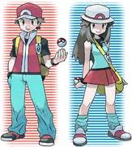
เมื่อเปิดเกมมา จะเป็นการแนะนำปุ่มคำสั่งพื้นฐานต่างๆ ในเกม และเล่าเนื้อเรื่องเกมคร่าวๆ ว่าเราจะต้องทำอะไรบ้าง
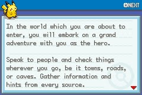
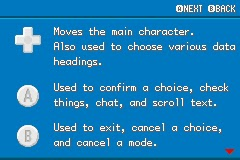
จากนั้นดร.ออร์คิด<Prof.Oak> จะมาโม้เกี่ยวกับโปเกมอนเล็กน้อย
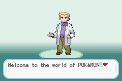
และให้เราเลือกตัวละครว่าจะเล่นเป็นผู้ชายหรือผู้หญิง โดยอันบนคือชาย และตัวเลือกล่างคือหญิง แล้วเกมจะให้ตั้งชื่อตัวเราและชื่อ
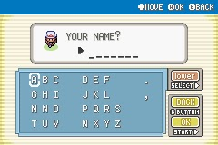
และชื่อคู่แข่งตามลำดับ
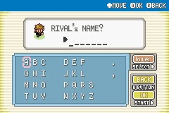
พอตั้งเสร็จแล้ว เราก็จะอยู่ที่ มาซาร่าทาวน์ ณ ห้องของตัวเอง ให้ลงมาที่ชั้น1 แล้วออกจากบ้านไปทางทิศเหนือ
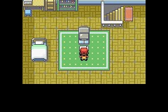
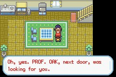
พอไปที่ทุ่งหญ้าแล้ว ดร.ออร์คิด จะเรียกเราเข้าห้องวิจัย
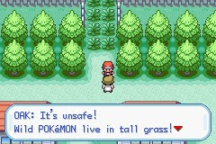
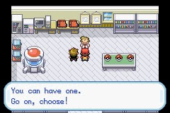
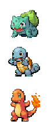 | |||
โปเกมอน 3 ตัวเเรกที่ได้ฟูชิกิดาเนะ <Bulbasaur> โปเกมอนพืช/พิษเซนิกาเมะ <Squirtle> โปเกมอนน้ำ ฮิโตะคาเงะ <Charmander> โปเกมอนไฟ |
เลือกเสร็จแล้ว ให้เราตั้งชื่อโปเกมอนที่เราเลือก และคู่แข่งก็จะเลือกโปเกมอนของเขา(ซึ่งเขาจะเลือกโปเกมอนที่เป็นโปเกมอนชนะทางเรา) เสร็จแล้ว ให้เราเดินออกไป ก่อนออกคู่แข่งจะมาสู้ ก่อน โปเกมอนที่ใช้สู้ จะเป็นตามตารางนี้(เลเวล5ทั้งหมด)
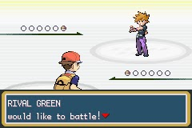
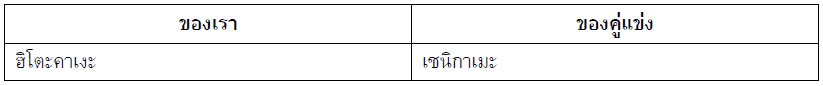
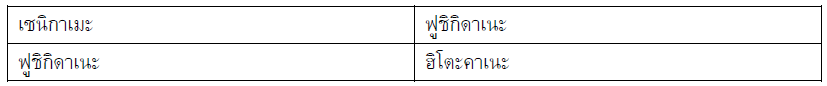
พอสู้เสร็จแล้ว ให้ออกจากห้องวิจัยแล้วขึ้นทางเหนือ ผ่านถนนสายที่1 ไปยังเมือง โทคิวะซิตี้